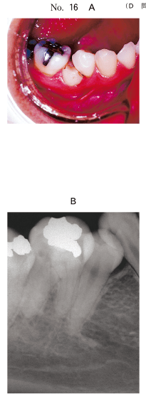
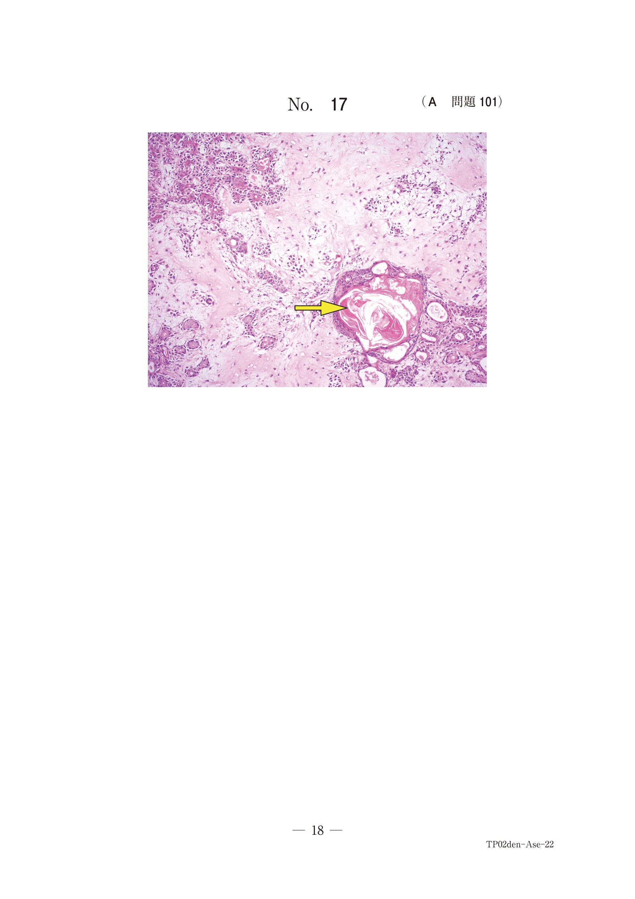
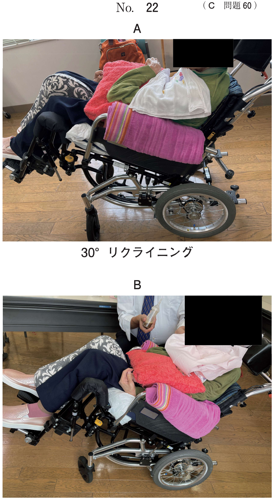

抜歯とその手技
普通抜歯の手技
術者・患者のポジション
術者のポジションは患者の7〜12時までの位置とし、術者が手術野を直接的に観察できることが重要。患者の体位は水平位（膝から下を水平に、鼻と膝を結ぶ線が水平）、あるいは半仰臥位（上体が水平より約15度の角度）で位置する。
抜歯鉗子による抜歯
抜歯鉗子は、抜歯に伴う歯周組織の損傷が少なく、抜歯力が調節しやすいなどの利点がある。
鉗子の脱臼運動
| 運動 | 内容 |
|---|---|
| A：嘴端の陥入 | 鉗子嘴端を歯根膜腔に陥入させる |
| B：揺さぶり | 頰舌方向への揺さぶり運動 |
| C：回転運動 | 歯軸を中心にした回転運動 |
- 鉗子は歯肉縁下まで嘴端を挿入し、嘴端部と根面が少なくとも3点以上で接触する鉗子を選択
- 鉗子を歯に適合するときには、上顎では口蓋より、下顎では舌側より適合し、ついで頰・頰側を適合する
挺子による抜歯
挺子は、歯冠が崩壊した歯、位置や方向によって抜歯鉗子で把持できない歯、および理伏歯の抜去に有効。
挺子の3つの作用
| 作用 | 内容 |
|---|---|
| 楔作用 | 挺子先端を歯根と歯槽骨の間に押し込んで、歯を押し出す |
| 回転作用 | 挺子を回転させて歯を脱臼させる |
| てこ作用 | 挺子を支点にしてテコの原理で歯を挙上する |
- 把柄を手掌に置き、第2指を伸ばして嘴先のすぐ下に添える
- 挺子の先端は頰側近心隅角の歯根膜腔に挿入
- 先端は必ず歯根と歯槽骨の間に位置させる
- 抜される歯を頰舌的に左の手指で把持することにより、鉗子あるいは挺子が適正な位置に保持されることを助ける
抜歯創の処理
- 鋭匙で抜歯窩内の不良肉芽や歯根病巣を除去
- 清潔な生理食塩液で洗浄
- 血管の新生（治癒）に重要な歯根膜、歯肉を損傷しないよう注意
- 鋭利な骨縁は歯槽骨鉗子や骨ヤスリで整形
難抜歯
抜歯困難の理由
| 原因 | 具体例 |
|---|---|
| 歯自体に起因 | 複数歯根や歯根膜開、屈曲が強度な場合、歯冠形大や歯の破折りやすい場合 |
| 歯と顎骨の関係 | 慢性炎症や外傷による骨性癒着、萌出異常（転位・傾斜・逆生など） |
| 顎骨に起因 | 歯槽および上顎洞中隔の骨硬化、顎骨が脆弱で骨折の危険性 |
残根の抜歯手技
歯肉縁下に大きな歯根が残った場合の手順：
- 1. 歯肉に切開を加える
- 2. 粘膜骨膜弁を剥離する
- 3. 低速回転のラウンドバーで歯根周囲の骨を削除
- 4. 挺子で脱臼させる
- 5. 小さな鉗子で摘出
- 6. 必要に応じて歯根の分割
下顎埋伏智歯の抜歯手技
下顎埋伏智歯の抜歯は、埋伏の深さや歯の方向によって骨削除、歯冠分割などの手術操作が加わり、難抜歯の代表的なもの。
手順
| 手順 | 内容 | 器具 |
|---|---|---|
| 1. 粘膜切開 | No.15メスで第二大臼歯遠心から下顎枝外斜線に向かって切開。頰側歯肉溝線を経て頰側へ縦切開を延長 | メス（No.15） |
| 2. 粘膜骨膜弁の剥離・歯冠明示 | 剥離子で歯肉や骨膜を剥離し、ラウンドバーで智歯の歯冠を覆う頰側の骨を削除 | 剥離子、ラウンドバー |
| 3. 歯冠分割と歯根脱臼 | 高速エアータービンで歯冠と歯根を分割。歯冠部を除去後、挺子で歯根を脱臼 | エアータービン、挺子 |
| 4. 抜歯創の処理 | 鋭匙で不良肉芽・歯根尖の折片を除去。生理食塩液で洗浄。縫合閉鎖 | 鋭匙、縫合糸 |
注意：歯冠の分割時に舌側骨を深く切り込むと、舌側軟組織からの出血や舌神経を損傷する危険性がある
上顎埋伏智歯の抜歯
上顎智歯は退化傾向によって歯冠は小さく、歯根は融合により細長い三角錐状を呈するため、下顎智歯に比べて抜歯は容易なことが多い。ただし、開口の程度、上顎洞との近接、歯根の弯曲などに注意が必要。
抜歯前の感染予防
手術部位感染（SSI）の予防目的で、予防的抗菌薬投与を行う場合がある。
- 薬剤：アモキシシリン水和物（ペニシリン系）
- 投与時期：処置の1時間前に単回経口投与
- 目的：術中の菌血症による感染リスクの低減
過去問で確認
歯肉縁下にある下顎第一大臼歯の残根抜去時に、挺子を使用するために行うのはどれか。3つ選べ。
b 皮質骨の骨切り
c 歯根周囲の骨削除
d 粘膜骨膜弁の剥離
e Partschの歯肉切開
【解説】歯肉縁下の残根を挺子で脱臼させるためには、まず粘膜骨膜弁を剥離して視野を確保し（d）、歯根周囲の骨を削除して挺子が入るスペースを作り（c）、必要に応じて歯根を分割してアンダーカットをなくす（a）。皮質骨の骨切り（b）は不要。Partschの歯肉切開（e）は嚢胞開窓術に用いる切開法であり、残根抜去とは無関係。
22歳の女性。下顎右側小臼歯部の食渣停滞を主訴として来院した。下顎右側第二小臼歯の抜歯を行うこととした。初診時の口腔内写真（別冊No.16A）とエックス線写真（別冊No.16B）とを別に示す。 抜歯時に行うのはどれか。すべて選べ。

b 骨の削除
c 歯の分割
d 根尖の掻爬
e 縫 合
【解説】埋伏・半埋伏歯や歯肉縁下に歯冠がある場合の難抜歯では、歯肉弁の形成（a）→骨の削除（b）→歯の分割（c）→抜歯→縫合（e）の手順で行う。根尖の掻爬（d）は根尖病巣がある場合に行うが、問題の状況では適応外。
挺子の持ち方の写真（別冊No.22）を別に示す。 正しいのはどれか。1つ選べ。

b イ
c ウ
d エ
e オ
【解説】挺子の正しい持ち方は、把柄を手掌に置き、第2指（示指）を伸ばして嘴先のすぐ下に添える方法。これにより挺子が適正な位置に保持され、その滑脱を防ぎ、周囲組織の損傷を抑えることができる。
23歳の女性。下顎左側大臼歯部の疼痛を主訴として来院した。智歯周囲炎と診断し、抜歯することとした。初診時の口腔内写真（別冊No.34A）、エックス線画像（別冊No.34B）及び抜歯に使用する器具の写真（別冊No.34C）を別に示す。 粘膜骨膜切開後に用いる器具を使用順に並べよ。


b イ
c ウ
d エ
e オ
【解説】下顎埋伏智歯抜歯の器具使用順。粘膜骨膜切開後の手順：剥離子で粘膜骨膜弁を剥離（ウ）→ラウンドバーで骨削除（ア）→エアータービンで歯冠分割（オ）→挺子で歯根脱臼（イ）→鋭匙で掻爬（エ）。剥離→骨削除→歯冠分割→脱臼→掻爬の順序を押さえる。
上顎智歯抜去における手術部位感染の予防目的で、アモキシシリン水和物を単回経口投与することとした。 適切な投与時期はどれか。1つ選べ。
b 手術前日
c 手術1時間前
d 手術直後
e 手術翌日
【解説】予防的抗菌薬の単回投与は、処置の1時間前に経口投与するのが適切。手術時に血中濃度がピークに達するようにするため。術前3日や前日では早すぎ、術後では菌血症に対して遅すぎる。